O Primeiro Webinar de Biotecnologia da UFGD
Inscrever-se
O Primeiro Webinar de Biotecnologia da UFGD
Inscrever-se
Em prol da reativação do Centro Acadêmico de Biotecnologia: o 1° seminário online de biotecnologia da UFGD.
Das Raízes da Ciência aos Ramos da Biotecnologia: conheça e inspire-se em campos de atuação e suas aplicações nos meios profissionais, científicos e acadêmicos.
Junto de professores e convidados especializados, o evento abordará temas interessantes e importantes para cientistas e pesquisadores das mais diversas áreas apoiadas pela Biotecnologia.
O evento conta com um total de 13 palestrantes e oferece grande variedade de apresentações, totalmente online, permitindo alta flexibilidade para o você, ouvinte, na escolha das palestras. Estude o que te faz feliz!
Clique em uma palestra para ver mais detalhes!

A pesquisadora propõe apresentar as diferentes vertentes da biotecnologia aplicada à produção vegetal. Adiante à transgenia, serão abordadas diferentes ferramentas que vêm sendo empregadas no melhoramento de espécies e produção de alimentos.

A Pneumonia permanece liderando as causas infecciosas de morte em crianças menores de 5 anos no mundo, sobretudo nos países em desenvolvimento, o pesquisador propõe-se, então, a elucidar detalhes como os desafios e estratégias no desenvolvimento de vacinas que combatam a Pneumonia.

"Nessa palestra tutorial, vou apresentar as principais bases bibliográficas de interesse da Ciência, quais são suas características em comum e quais as diferenciam. Vou aprofundar com a base Web of Science (Clarivate Analytics) para mostrar como usá-la, contrapondo vantagens e desvantagens em relação às demais bases, tanto para quem está fazendo um levantamento para seu projeto de pesquisa, quanto para quem vai escrever um artigo de revisão da literatura. Com respeito a este último caso, para encerrar, vou explorar alguns exemplos de artigos com cienciometria e metanálise."

A metagenômica explora a diversidade de microrganismos presente no ambiente com o auxílio da biologia molecular e da bioinformática. Essa técnica permite obter conhecimento sobre comunidades de microrganismos não-cultiváveis presente em diferentes nichos ambientais e novos microrganismos, além disso, muitas enzimas potencialmente úteis para a biotecnologia e com aplicações em diversas áreas têm sido continuamente reveladas por essa técnica.

A aplicação de enzimas em processos industriais resulta em benefícios na produção de alimentos, bebidas, biocombustíveis, ração animal, polpa de celulose e papel, dentre outros. As vantagens da produção de enzimas industriais por cultivos microbiológicos também merecem destaque, como: reduzido custo e tempo de produção, possibilidade do emprego de resíduos agroindustriais na formulação dos meios de cultivo e a biodiversidade microbiana que permite a produção de biocatalizadores com propriedades catalíticas distintas. A palestra abordará as principais aplicações de enzimas em processos industriais, os processos utilizados para produção desses biocatalizadores por microrganismos e algumas estratégias para superação de problemas que permeiam essa área do conhecimento.

A palestra fará uma abordagem sobre as principais formas de conservação de recursos genéticos vegetais in situ e ex situ, mostrando as vantagens e desvantagens de cada uma. O enfoque será em criopreservação de plantas, visto que nas últimas décadas essa tecnologia tem evoluído rapidamente como a maneira mais promissora no armazenamento em longo prazo dos recursos genéticos vegetais.

As abelhas vivem em perfeita harmonia e guardam preciosos segredos no interior da colmeia. O mel e o pólen apícola são produzidos para nutrir a prole, e a própolis é gerada para proteger a colônia. Há séculos o homem vêm desvendando seus segredos, e descobrindo que estes produtos contêm moléculas bioativas, que resultam em relevantes propriedades terapêuticas, que beneficiam tanto as abelhas, quanto a saúde humana. Nesta palestra vamos conversar sobre o grande potencial biotecnológico dos produtos apícolas, relacionados à ação antioxidante, antimicrobiana, antitumoral, dentre outros.

Sendo o biotecnologista um profissional com formação ampla e multidisciplinar que pode atuar em setores de grande abrangência acadêmica e industrial como, por exemplo, as áreas de qualidade e biossegurança. Nesse sentido, a palestrante com vasta experiência na área de qualidade e biossegurança em indústrias multinacionais das áreas de alimentos e biotecnologia, além de sua vivência acadêmica, abordará o tema e apresentará perspectivas amplas no mercado de trabalho. Ademais, fará uma explanação sobre a questão de biossegurança antes e após o aparecimento do Covid-19.

Pouco se sabe sobre a microbiologia existente durante o processo de produção dos Queijos Artesanais Caipiras, uma vez que são utilizados como ingredientes culturas láticas naturais denominadas como “pingo, soro fermentado ou soro-fermento”. As novas cepas de bactérias ácido-láticas serão selecionadas através de secreção de enzimas lipolíticas e proteolíticas e quanto ao seu potencial probiótico, possibilitando o desenvolvimento de culturas iniciadoras, afim de padronizar o processo de produção desses tipos de queijos.
"Nessa palestra tutorial quero mostrar como um gerenciador de referências bibliográficas pode facilitar a vida do cientista. Vou apresentar alguns poucos gerenciadores, aprofundando com o Mendeley (Elsevier) para mostrar como usá-lo, tanto para organizar suas referências e armazená-las, quanto para usar em seus textos científicos. Neste último caso, você nunca mais vai precisar se preocupar em esquecer de incluir alguma das referências citadas ou com a formatação delas."

Kombucha é uma bebida funcional fermentada não-alcoólica consumida mundialmente e que está em crescente interesse no Brasil, por apresentar propriedades refrescantes e benéficas à saúde humana. Nesta aula iremos abordar como ocorre o processo fermentativo da bebida Kombucha, suas propriedades funcionais, composição físico-química e microbiana, regulamentação no Brasil e perspectivas futuras a partir de estudos recentes.

Recentemente, o desenvolvimento de materiais com características de biocompatibilidade, ou com propriedades antimicrobiana, têm atraído atenção da comunidade científica e tecnológica. Neste contexto, esta palestra abordará a aplicação de nanopartículas de óxidos (os materiais cerâmicos) com propriedades antimicrobianas, uma busca por novos caminhos no combate às bactérias e vírus.

A Ciência é uma forma de o ser Humano ver, abordar e compreender o mundo. Ela depende de uma base empírica, de fatos para que seja desenvolvida. Além da visão de mundo através da ciência, existem ainda outras formas de abordagem: através da filosofia, da religião, arte ou mesmo da loucura. Aqui, trataremos do método científico em nosso cotidiano e da ética que o envolve. A ética é um ramo da filosofia dedicado aos assuntos morais através de um conjunto de regras de ordem valorativa e moral de um indivíduo, de um grupo social ou de uma sociedade. A ética é importante em qualquer setor da sociedade, especialmente na ciência. Mas, será que não existem desvios éticos na ciência? Bem, é isso que discutiremos um pouco nesse encontro, com alguns exemplos clássicos que chegaram a estabelecer paradigmas que permaneceram por décadas - ou mesmo permanecem - e que nem sempre são benéficos para o ser humano.

A palestra apresentará de maneira resumida áreas estudadas na Pós-graduação em Microbiologia Agrícola na UFLA e sua relação com a biotecnologia. Além disso, abordará sobre conceitos de fermentação de café, possibilidades na inovação em pós-colheita, microrganismos, alguns resultados de pesquisa e a correlação com a biotecnologia.
As grandes mentes por trás de nossas palestras
Pesquisadora e Professora na UFGD.
Doutorando e Pesquisador na USP.
Pesquisador e Professora na UFGD.
Pesquisador e Professora na UFGD.
Pesquisador e Professor na UFGD.
Pesquisador e Professor na UFGD.
Pesquisadora e Professora na UFGD.
Pesquisadora e Professora na UFGD.
Pesquisadora e Professora na UFGD.
Doutorando e Pesquisador na UFLA.
Pesquisador e Professor na UFGD.
Pesquisador e Professor na UFGD.
Doutoranda e Pesquisadora na UFLA.
O presente seminário online tem como objetivo a arrecadação de dinheiro para a reestruturação do Centro Acadêmico de Biotecnologia (CABIOTEC) da Universidade Federal da Grande Dourados para representar o interesse da classe estudantil, a qual tem direito a voz ativa e alcançar as principais demandas e necessidades dos estudantes.
Além disso, buscamos: contribuir com a formação do pensamento crítico dos discentes de biotecnologia; agir como ponte entre estudantes e professores, técnicos, coordenadores do curso e outras entidades; solucionar problemas estudantis; divulgar e realizar eventos de interesse e participar ativamente da formação dos futuros biotecnologistas de nossa instituição.
Com a necessidade da reestruturação legal de nosso centro acadêmico, associação sem fins lucrativos regulamentada pela lei federal nº 7.395 de 31 de outubro de 1985, temos o dever de agir perante todos os trâmites legais e burocráticos. Faremos o melhor da melhor forma. Desta maneira, o CABIOTEC necessita de contribuições para auxiliar nos custos dos serviços que nos serão prestados para recomposição das atividades de nossa organização.
Portanto, estamos arrecadando doações na conta abaixo e contamos com o seu apoio! ;)
Banco: Banco do Brasil | Nome do Titular: Camila Rafaela Santos de Oliveira | Agência: 2697-2 | Conta: 42778-0
Insira seus dados e aguarde sua confirmação!
Todos os direitos reservados © 2020 WEBiotec